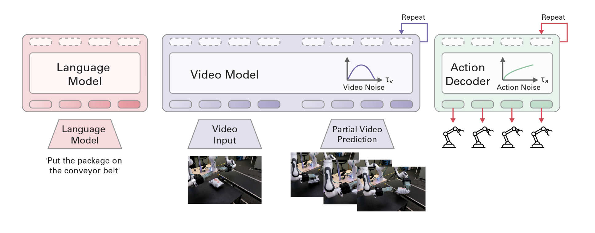
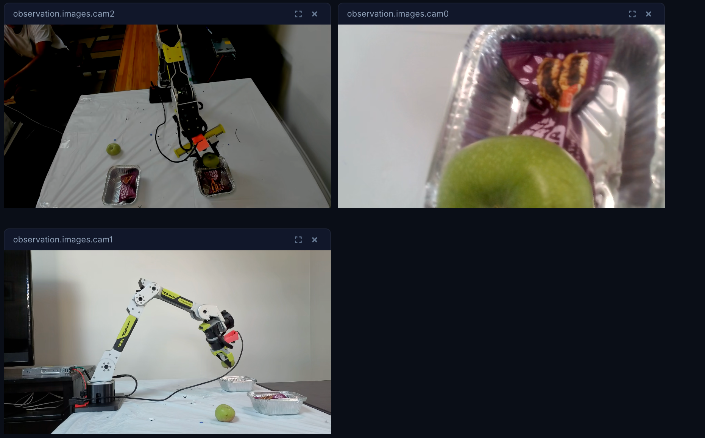
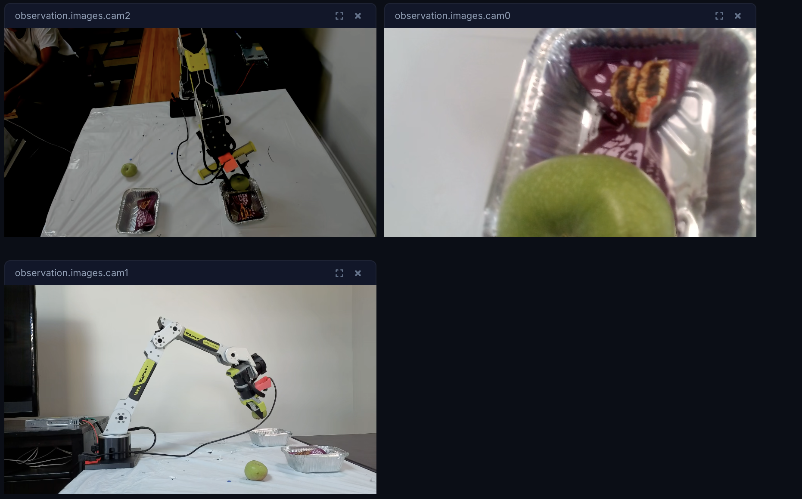

Abstract
Over the course of this summer internship at Solo Tech (Physical AI), I worked across three robot-learning projects, each attacking the same underlying problem, getting a robotic arm to perform useful manipulation from policies. First, I participated in the AIC challenge to do dexterous cable insertion, training the model using behavior cloning (ACT) achieving 160/300 in competition. Also, post-competition, I experimented with diffusion policy trained with DAgger (dataset aggregation)
Second, I built an end-to-end Video-Action Model (VAM) pipeline on the mimic-video architecture for the SO100 arm that takes just a single camera image plus a text instruction and outputs action trajectories. I also fine-tuned the underlying Cosmos-Predict2 video backbone with LoRA to improve grasping. Third, I brought up a SeeedStudio reBot arm (higher industrial scale precision compared to SO100) over a Damiao serial-CAN bus, collected and published datasets, and deployed MolmoAct2 model on it to perform various tasks(packing breakfast/cutting vegetables). This report documents the goals, methods, obstacles, results, and learning of each project, along with the environment/setups that made the four possible.
1. Introduction
Everything here is about getting robot arms to do tasks with various types of finetuned policies. I worked on three projects, they overlapped because training runs took days and hardware order took time, or simply data collection was a bit boring, so there was always something to switch to while I waited on something else.
- 01Project 1 — AIC Challenge: a contest where a simulated arm has to insert a connector into a port. I inferenced a “cheatcode” policy for creating expert episodes along with teleoping episodes in gazebo sim, creating a 247 episode finetuning dataset for SmolVLA, pi0.5, and ACT.
- 02Project 2 — SO100 Video-Action Model: the biggest project. Using Mimic, I built a policy for the cheap SO100 arm that takes just a single camera image plus a text instruction and outputs action trajectories, then inferenced on the real arm to perform the task. Compared to standard VLAs that require a lot of teleoperation videos, Mimic video policy can predict actions much more efficiently.
- 03Project 3 — reBot arm: Using and setting up a different heavier industrial precision arm(SeeedStudio), collecting data with it, and running MolmoAct on it to perform various household tasks.
2. Concepts
Here are the concepts/prior works that are relevant to the projects I worked on:
- 6-DoF arm / SO100 / reBot - "6 degrees of freedom" means 6 independently controllable joints. The SO100 is a low-cost 6-DoF arm; the reBot (SeeedStudio B601) is a different 6-DoF arm with a gripper(6+1).reBot can handle much more load and industrial scale precision than cheaper SO100
- DAgger (Dataset Aggregation) - An imitation-learning method that fixes behavior cloning's compounding-error problem. We used an “expert” policy, cheatcode, known as a"cheating" solution that uses the poses of the plug and port to calculate target poses, effectively giving the ground-truth solution. Round 1 is pure expert; in later rounds the student policy drives more and more of the time, but the expert still supplies the correct label for whatever state the student lands in. A mixing weight β shrinks each round (≈1.0 → 0.3), so the student learns to recover from its own mistakes. Each round trains on all prior rounds combined.
- Video-Action Model (VAM) / mimic-video - A two-part policy. A large video backbone (Cosmos-Predict2 2B from Nvidia), pretrained on internet video and finetuned on community SO100 data predicts a short "visual plan" of what should happen next; a small, trainable action decoder reads that plan and outputs an action chunk (joint targets). It needs very little data to fine-tune the full model, and its output space is whatever you train it on — here, SO100 joints(can be done with other robots as well(franka)).
- VLA / MolmoAct2 - A vision-language-action model from Allen Institute trained on 3.3 million samples that was used for YAM arms and so100 arms with good success rates, hence why I used it for my so100 and reBot arms(reBot is similar to YAM).
- LoRA - A cheap fine-tuning trick: instead of retraining a giant model's weights, you train a small add-on and merge it in afterward. Fast, low-memory, and basically nudges a big model toward a new action/task/domain.
Project 01 · Simulation
3. Project 1 — AIC Challenge (connector insertion)
3.1 Goal
AIC was a contest organized by Intrinsic (subsidiary of Google Alphabet) targeting a high-value bottleneck in modern manufacturing: electronics assembly. More specifically dexterous cable management and insertion, which today is a manual, repetitive process. In terms of robotics, this task is notoriously difficult due to the complex physics of flexible cables and the precision required to see, handle and carefully insert connectors.
The goal was to train an AI model collecting data with open-source simulators (e.g. Gazebo), leveraging ROS for communication, with the simulated arm inserting a connector into the port (connector types SFP and SC, across a few "trials"). My goal was to get a high enough accuracy score to qualify for the next stage of real-life deployment.
3.2 Collecting Data
Inferenced with Cheatcode policy to get “perfect” episodes as training data for the task. For more variance in the data, also teleoperated 50 episodes in simulation(gazebo). Had a total of 247 episodes dataset for finetuning.
3.3 Training
Trained several policies including ACT, pi0.5, SmolVLA using LeRobot on RTX 5090. ACT worked best for now(would later use diffusion policy instead).
3.4 Inferencing
Ran inference of ACT finetuned model in gazebo and received a score of 160, logs here.
3.5 Further Improvements(DAgger+diffusion policy)
Decided to use DAgger to improve the policy. I explained in less detail what it is in the Concepts section, but here’s more detail to fully understand it. DAgger stands for dataset aggregation and is basically, in regards to my project, the process of starting with a model trained purely on cheatcode (perfect groundtruth datasets) and then using the data from that to train a diffusion policy. Then run the cheatcode model and new diffusion model side by side with the DAgger loop with cheatcode having a power of 90%(basically every step has a 90% chance of being driven by cheatcode and 10% chance of being driven by diffusion). Then use this data generated and the previous purely cheatcode data to train a new diffusion policy(v2). Then repeat this process with each new diffusion policy being trained by all the episodes generated before it by various powers with the powers steadily decreasing as the next diffusion model comes. Do this for 6 rounds with round 1 being pure cheatcode. Then run a new diffusion policy trained on the previous 6 rounds data one more time(basically round 7, but with no power % thing), and use that policy. I found this lecture 2 at UC Berkeley from Sergey Levine on DAgger very helpful.
3.6 Result and Learnings
Our final score of the competition was 160 out of 300 achieving full success in one cable insertion task and partial in other two tasks. While the score was not enough to get to the next stage, there were a lot of learnings.
Learned about bringing together VLAs, ROS, Simulators into one integrated environment. The AIC community was super helpful in helping debug issues via github and discourse. Their guidance resulted in several improvements: like doubling the resolution from 288x256 for better accuracy, more episodes with wide pose variability. Using diffusion policy instead of ACT in combination with DAgger was the most promising that I could not fully implement in time for competition.
Project 02 · World model
4. Project 2 — SO100 Video-Action Model
Goal: Extend the VAM (mimic-video) for the SO100 arm that takes one camera image plus a text instruction ("put the cubes in the tray") and outputs a joint trajectory.
4.1 Choosing the approach
I first evaluated NVIDIA's Cosmos Predict 2.5, but its action output only supports ten fixed robot embodiments(10D) while SO100 supports (7D) — it can't produce SO100 actions without retraining the whole model. So I switched to the mimic-video VAM, which is a combination of LLM for task description, cosmos-predict2 backbone as video model + small trainable action decoder (figure below)

4.2 Data pipeline
I gathered 124 public SO100 datasets(used for SmolVLA) (~60 GB), and wrote a converter to turn them all into mimic-video trainer's format (.zarr) , aligning camera video, joint states, and the text instruction per episode. Final set: 6,611 episodes. I precomputed the language embeddings once.
4.3 Training with Nvidia RTX 5090
The 5090 was new enough that the software stack had no compatible GPU kernels. I upgraded the core Pytorch libraries, force-reinstalled the compiled extensions to matching builds, and swapped one attention component for a variant that runs on the 5090 (torch SDPA attention).
4.4 Fine-tuning the Decoder on So100 arm
The general decoder model seemed calibration-limited: it predicts absolute joint angles, but it’s been trained across multiple arms with different zero-points, so it learns a blurred average and was off — about 23° per joint. To test, if the generated video plan was the main bottleneck, I fed the model the ground truth future plan instead of a generated one, and the error did not change much. This indicated that the issue was with the decoder’s calibration and not the backbone.
The fix was to fine-tune the decoder on our own So100 arm: ~50 episodes I'd recorded on our specific arm with one fixed camera along with 6611 SmolVLA So100 episodes. I did the fine tuning and this time the model's output joint ranges matched much more closely with what the arm can physically reach. I also made the control loop retry on small hardware glitches instead of crashing.
4.5 Upgrading the frozen Cosmos-predict2 backbone with LoRA
Even though calibration-matched, the arm tended to reach toward the object but not descend far enough to grasp — because the frozen cosmos-predict2 backbone, trained on generic internet video, didn't picture our setup well and its plan stalled before the grasp. Worked with maintainers of mimic-video to adapt the backbone to So100 domain with a LoRA fine-tune (Section 2: Concepts) on our own footage. I first re-encoded 6,611 So100 teleop videos into a format the trainer could read (.zarr files), ran the LoRA fine-tune. Here is the link to training run of fintuned cosmos-predict2: https://wandb.ai/sarohapranav-robotics/mimic-so100-backbone/runs/v2w_so100_lora_rank256_withtask
Because the decoder reads the backbone's features, I retrained the decoder against the fine-tuned backbone (its loss dropped steadily as it learned). Link to decoder finetuning run: https://wandb.ai/sarohapranav-robotics/vam/runs/w2a_so100_ft3_v2w_so100_lora_rank256_withtask_iter10000_fused_lr1.000e-04_layer20_bsz128?nw=nwusersarohapranav
4.6 Results and Learnings
Currently, actively debugging the final decoder inference with maintainers of mimic-video to see why the final grasp is not happening. Here is the latest decoder inference video
Project 03 · Physical arm
5. Project 3 — reBot Arm (an industrial strength robot arm)

5.1 Goal
I had been building with open source So100 arms for a while, they are low cost (<200 USD) and effective. Rebot arms from SeeedStudio have a strong CNC build with industrial/academic precision, and can carry up to 2.5 kg payload. So,when I got my hands on the reBot arm from my advisor Dhruv, I couldn’t wait to collect data with it for the MolmoAct2, and test how well they would work.
5.2 Platform
The variant I used is a Damiao serial-CAN bridge that does work on Mac(originally thought the arm I was using was a RoboStride variant of ReBot and faced lots of issues with Mac and was forced to try setting up on Linux until I realized)
5.3 Setup
I set up the arm using the instructions here, mapping the arm's motors — 7 of them (6 joints + gripper), each with its own ID on the shared bus and configuring it with Windows DM_Tools software.
Teleop first failed at the second motor, I initially suspected that the motor was faulty. Deeper debugging showed the first motor responded perfectly but all six after it were completely silent. After ruling out software causes, I found it was a wiring issue: the CAN data line was broken right after the first joint. The motors had power (LEDs on) but were off the data bus — a loose connector(2nd cable repeatedly came off). I fixed it with heavy duty gorilla tape.
5.4 Recording data
With the arm working, I recorded episodes using three webcams. One camera kept timing out until I set it to a faster, matching frame rate. The task I started with was to pack the lunch box. "put one apple and one fig bar in each of two boxes," recorded across four sessions and merged into one 52-episode dataset, published to Hugging Face.

Training Video visualization with three cameras: https://huggingface.co/spaces/lerobot/visualize_dataset?path=%2Fpranavsaroha%2FreBot_packingbreakfast_all
5.5 Training, testing, task selection
I trained MolmoAct2 on this data and tested it. Here is the inference video. It “sort of” works where the arm is able to pick the objects after a few tries and place it in the “lunch boxes” (although the box tips over in the process). To improve it further, I plan to create a 20-episode set that moves the object to 10 different positions.
Another idea that I tried was cutting with a 3D-printed knife attachment, this idea worked to some degree but wasn’t a task that required reach, the strongest quality of this arm as compared to cheaper alternatives(so100 arm), so we switched to a different task. The final task that is currently undergoing data collection is throwing trash into a trash can because this action requires significant reach that plays to reBot arm’s strength (although not the most practical usecase)
6. What I learned over the summer
- 01System Setups and Environments are the bulk of the work. Getting a new GPU supported(RTX 5090 pytorch package compatibility with cu128), bridging conflicting environments across projects with conda/uv setup, tracing a broken wire(reBot DAMIAO 2nd port loose forever), making sure wandb is setup to collect training metrics, ensuring the arms calibration remains same between training and inference steps —small but important things to get right consistently, all take time.
- 02World models are there, but fine tuning on specific embodiments still matters - There is a lot of progress in the last year on world models being able to do long horizon tasks with promising results, but robot embodiment is still needed. You still need to finetune for your specific arm embodiment as I experienced with both Video action model for So100 and MolmoAct2 for the ReBot arm
- 03Community Support - All my learnings have been a result of reaching out to the community, opening github issues (eg: mimic-video), participating in robotics challenge (AIC challenge), sharing work on forums (discourse), attending talk by MolmoAct2 creators (Jiafei Duan and Haoquan Fang), reaching out to mentors for advice (Dhruv my internship mentor), and heavily using lerobot open-source library.
7. Acknowledgements
I want to acknowledge the following folks who made my summer memorable. Yadunand Vijay for encouraging me to participate in the AIC challenge, Jonpai, creator of Mimic-Video, for helping me with problems faced on mimic-video project and finally Dhruv Diddi for being my internship mentor, keeping me inspired and helping/providing me with reBot arms.